Module 2 - Identify the Contributing Watershed
Step 1: Load data
Open the Data Source Manager and find the ArcGIS REST tab.
Connect the National Hydrography data server.
Select the WBDHU12 Polygon layer.
Click Add.
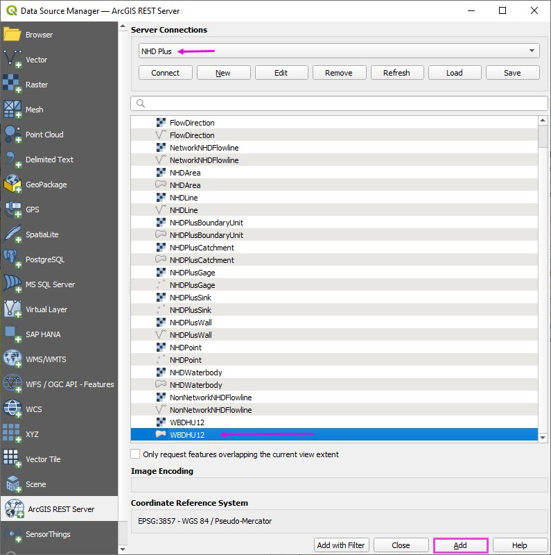
Step 2: Save one Watershed
Zoom to the Agua Caliente Watershed.
Wait for the watershed polygons to load.
Use the Select tool to select a watershed polygon.
Note
This watershed is already part of the project. Download it again to learn the process and to get an editable copy.
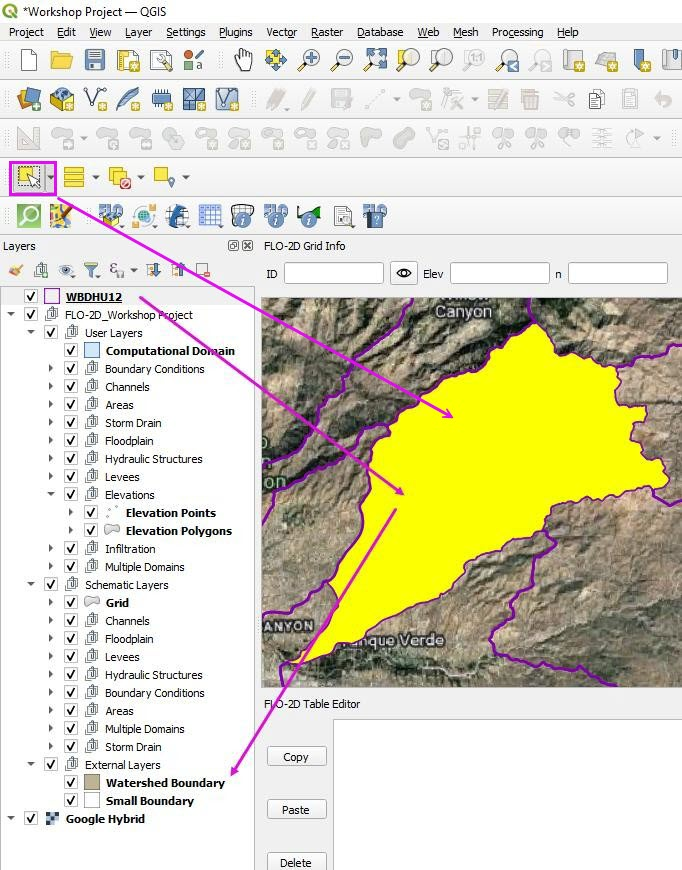
Step 3: Polygon export
It is easy to export a single watershed polygon or a group of watershed polygons as a Project Domain. These can be used for FLO-2D or any other 2D model.
Right click the WBDHU12 layer and click Export Data >> Save Features As.
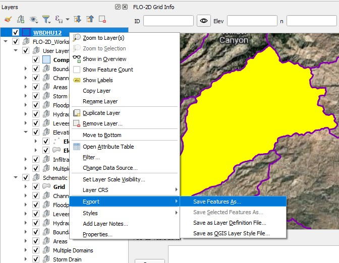
Fill the form and export the Watershed Polygon.
Note
This file needs to use EPSG:2222 because that is the project coordinate system.
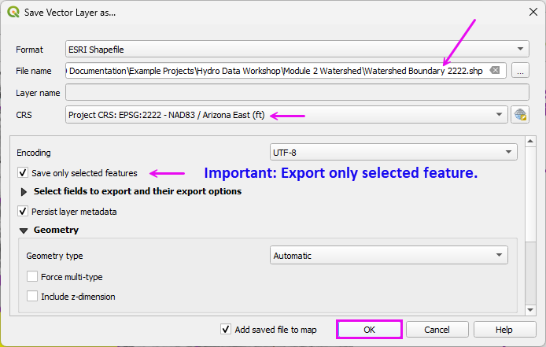
Adjust the polygon style to remove the fill and make the outline heavier.
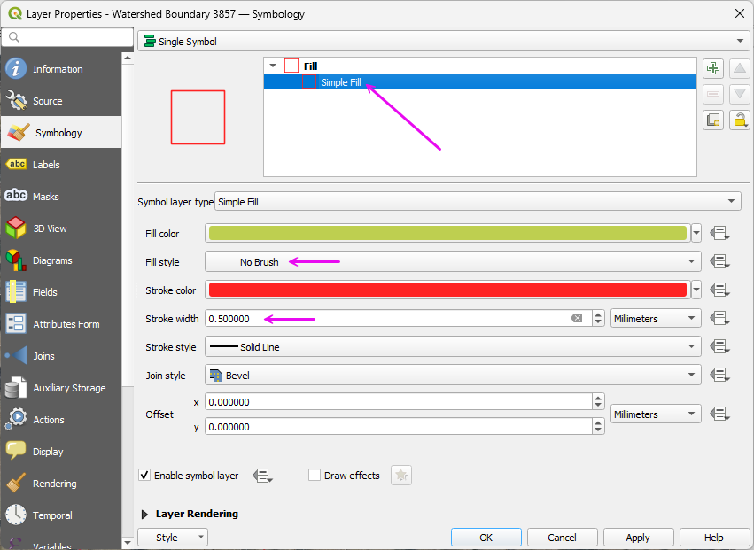
Step 4: Load the Flow Lines
Open the Data Manager tool and load the ArcGIS REST tab.
Select the Hydrography layer and click Connect.
Select the Flow Direction Raster and click ADD.
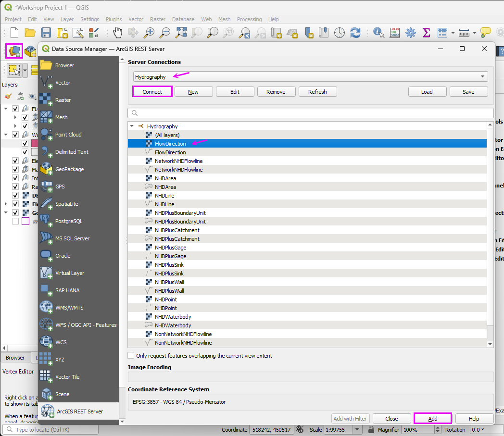
This project uses Soldier Canyon which is the streamline on the north-east side of the map.
Important
If the Flow Direction arrows are not visible, zoom in to a smaller area and allow them to render. Once they display at a closer scale, they typically load more efficiently when zooming back out to a larger extent.
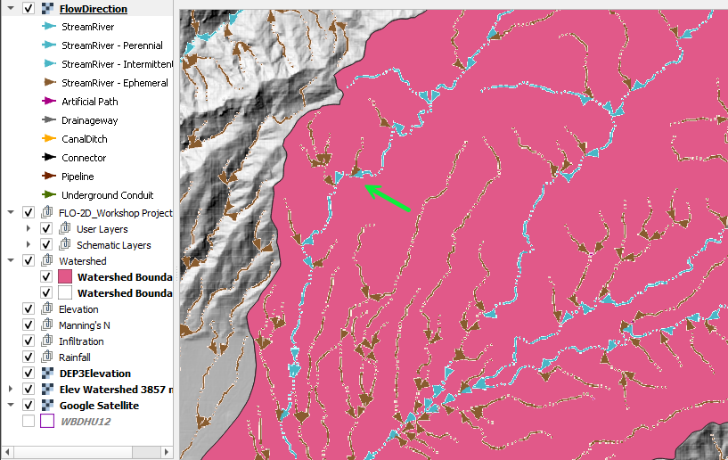
Once the Flow Directions load, export it to a raster file.
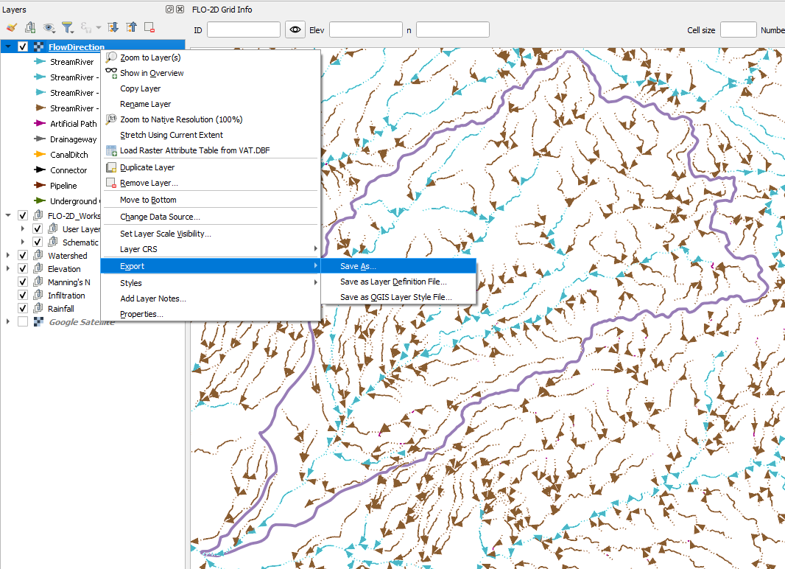
Fill the form as shown and click OK.
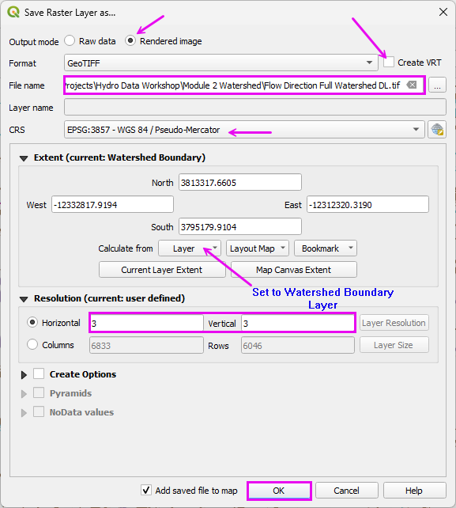
Uncheck the source layer and move both layers to the Watershed Group.
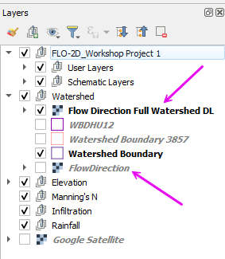
Step 5: Trim the Watershed Polygon
The watershed polygon is too large so it can be trimmed manually or by running some watershed processing tools.
Note
2D models do not require detailed watershed delineation. This step provides a simple method to trim the polygon to the contributing drainage area.
Select the Layer Watershed Boundary 3857.
Click the Edit Pencil.
Select the Vertex Tool.
Delete the vertex points that are outside the flow line extent of the Project Area.
Hint
Press Ctrl+Z to undo unintended deletions. If the changes are beyond recovery with Undo, toggle off editing mode and decline the save to revert to the last committed state.
Once finished, toggle the Editor Pencil off and click Save.
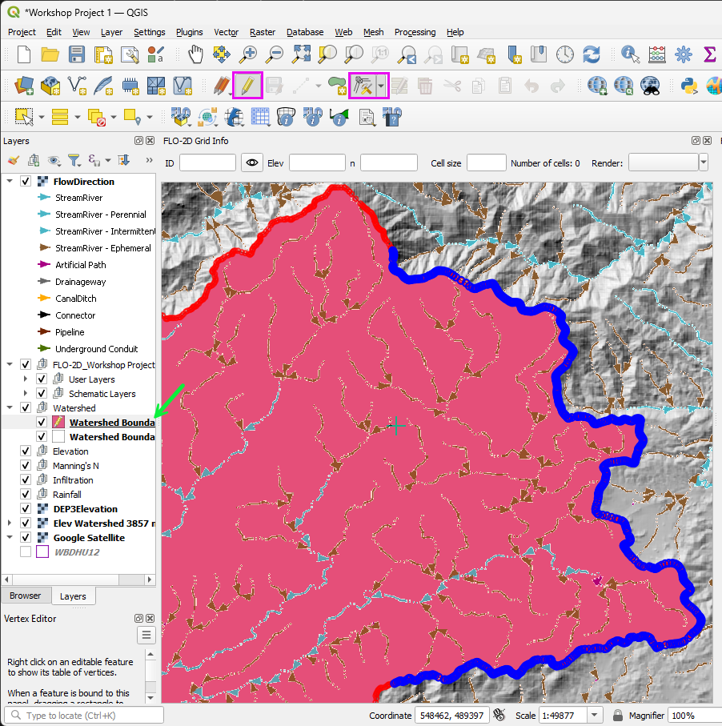
This is the rough project extent.
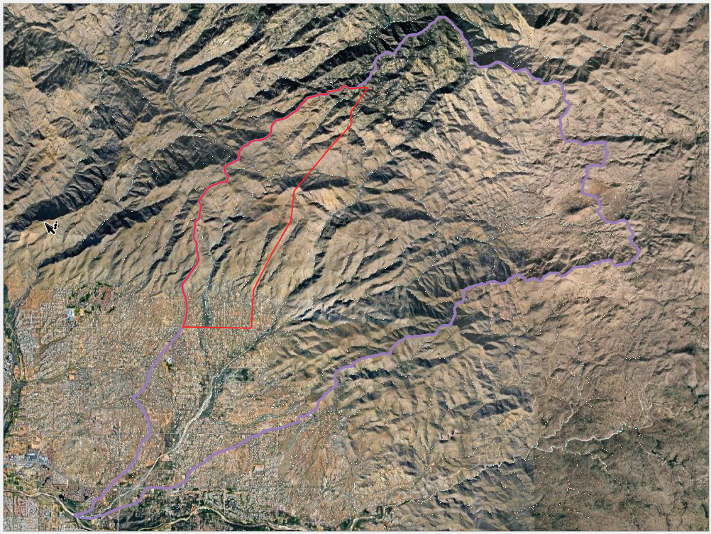
The Area of Interest is here.
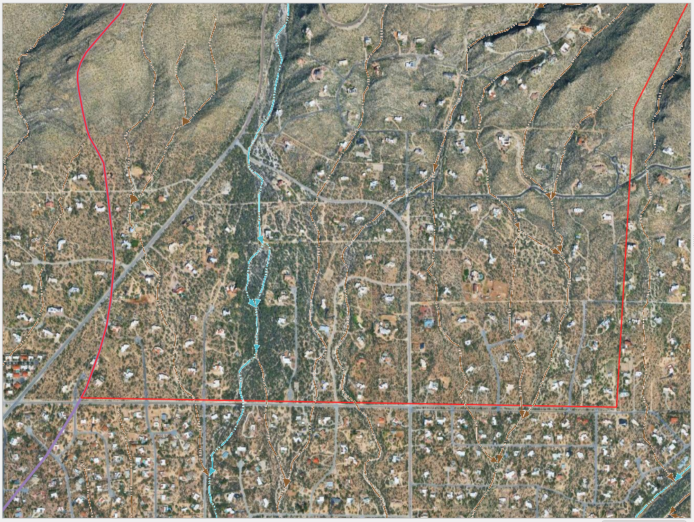
Step 6: Create the Grid
Open the attributes table and toggle the Edit Pencil on.
Set the Object ID to 20-ft or 30-ft and press the Enter to apply the changes. (30-ft faster for training.)
This field has just been reutilized for cell size.
Save the edits and toggle the Edit Pencil off.
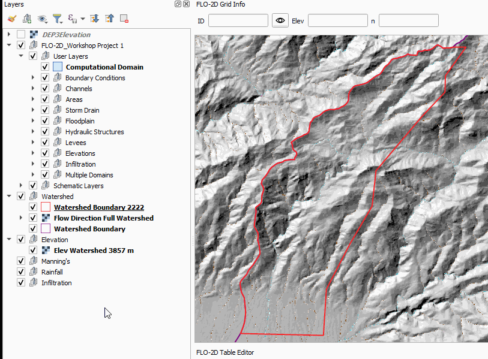
Click the Create Grid button.
Fill the form as shown below and click Ok.
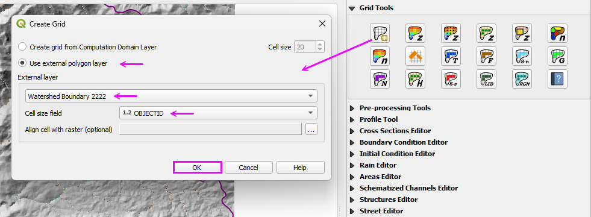
If desired, remove the Hydrography Connected Layers.
Uncheck the Grid.
Group the Watershed layers in the Watershed Group.
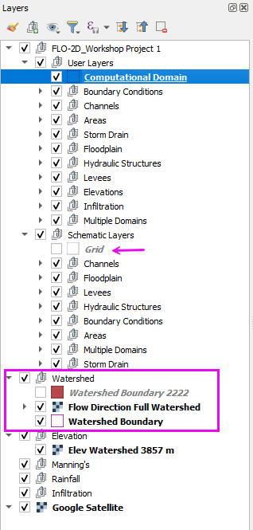